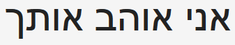

val x : int
Full name: index.x
Full name: index.x
Multiple items
val int : value:'T -> int (requires member op_Explicit)
Full name: Microsoft.FSharp.Core.Operators.int
--------------------
type int = int32
Full name: Microsoft.FSharp.Core.int
--------------------
type int<'Measure> = int
Full name: Microsoft.FSharp.Core.int<_>
val int : value:'T -> int (requires member op_Explicit)
Full name: Microsoft.FSharp.Core.Operators.int
--------------------
type int = int32
Full name: Microsoft.FSharp.Core.int
--------------------
type int<'Measure> = int
Full name: Microsoft.FSharp.Core.int<_>
val y : int
Full name: index.y
Full name: index.y
val addFive : number:int -> int
Full name: index.addFive
Full name: index.addFive
val number : int
type Gender =
| Male
| Female
Full name: index.Gender
| Male
| Female
Full name: index.Gender
union case Gender.Male: Gender
union case Gender.Female: Gender
type Language =
| English
| German
| Hebrew
Full name: index.Language
| English
| German
| Hebrew
Full name: index.Language
union case Language.English: Language
union case Language.German: Language
union case Language.Hebrew: Language
type Plurality =
| Singular
| Plural
Full name: index.Plurality
| Singular
| Plural
Full name: index.Plurality
union case Plurality.Singular: Plurality
union case Plurality.Plural: Plurality
val speak : Language * Gender * Plurality -> string
Full name: index.speak
Full name: index.speak
val phrase : Language * Gender * Plurality
val speak : Gender * Plurality -> string
Full name: index.speak
Full name: index.speak
val phrase : Gender * Plurality
namespace System
type Weather =
| Sunny of temperature: int
| Wet of temperature: int * windSpeed: int
| Cold of temperature: int * snowFall: int
Full name: index.Weather
| Sunny of temperature: int
| Wet of temperature: int * windSpeed: int
| Cold of temperature: int * snowFall: int
Full name: index.Weather
union case Weather.Sunny: temperature: int -> Weather
union case Weather.Wet: temperature: int * windSpeed: int -> Weather
union case Weather.Cold: temperature: int * snowFall: int -> Weather
type Forecast =
{ForecastDate: DateTime;
Prediction: Weather;}
Full name: index.Forecast
{ForecastDate: DateTime;
Prediction: Weather;}
Full name: index.Forecast
Forecast.ForecastDate: DateTime
Multiple items
type DateTime =
struct
new : ticks:int64 -> DateTime + 10 overloads
member Add : value:TimeSpan -> DateTime
member AddDays : value:float -> DateTime
member AddHours : value:float -> DateTime
member AddMilliseconds : value:float -> DateTime
member AddMinutes : value:float -> DateTime
member AddMonths : months:int -> DateTime
member AddSeconds : value:float -> DateTime
member AddTicks : value:int64 -> DateTime
member AddYears : value:int -> DateTime
...
end
Full name: System.DateTime
--------------------
DateTime()
(+0 other overloads)
DateTime(ticks: int64) : unit
(+0 other overloads)
DateTime(ticks: int64, kind: DateTimeKind) : unit
(+0 other overloads)
DateTime(year: int, month: int, day: int) : unit
(+0 other overloads)
DateTime(year: int, month: int, day: int, calendar: Globalization.Calendar) : unit
(+0 other overloads)
DateTime(year: int, month: int, day: int, hour: int, minute: int, second: int) : unit
(+0 other overloads)
DateTime(year: int, month: int, day: int, hour: int, minute: int, second: int, kind: DateTimeKind) : unit
(+0 other overloads)
DateTime(year: int, month: int, day: int, hour: int, minute: int, second: int, calendar: Globalization.Calendar) : unit
(+0 other overloads)
DateTime(year: int, month: int, day: int, hour: int, minute: int, second: int, millisecond: int) : unit
(+0 other overloads)
DateTime(year: int, month: int, day: int, hour: int, minute: int, second: int, millisecond: int, kind: DateTimeKind) : unit
(+0 other overloads)
type DateTime =
struct
new : ticks:int64 -> DateTime + 10 overloads
member Add : value:TimeSpan -> DateTime
member AddDays : value:float -> DateTime
member AddHours : value:float -> DateTime
member AddMilliseconds : value:float -> DateTime
member AddMinutes : value:float -> DateTime
member AddMonths : months:int -> DateTime
member AddSeconds : value:float -> DateTime
member AddTicks : value:int64 -> DateTime
member AddYears : value:int -> DateTime
...
end
Full name: System.DateTime
--------------------
DateTime()
(+0 other overloads)
DateTime(ticks: int64) : unit
(+0 other overloads)
DateTime(ticks: int64, kind: DateTimeKind) : unit
(+0 other overloads)
DateTime(year: int, month: int, day: int) : unit
(+0 other overloads)
DateTime(year: int, month: int, day: int, calendar: Globalization.Calendar) : unit
(+0 other overloads)
DateTime(year: int, month: int, day: int, hour: int, minute: int, second: int) : unit
(+0 other overloads)
DateTime(year: int, month: int, day: int, hour: int, minute: int, second: int, kind: DateTimeKind) : unit
(+0 other overloads)
DateTime(year: int, month: int, day: int, hour: int, minute: int, second: int, calendar: Globalization.Calendar) : unit
(+0 other overloads)
DateTime(year: int, month: int, day: int, hour: int, minute: int, second: int, millisecond: int) : unit
(+0 other overloads)
DateTime(year: int, month: int, day: int, hour: int, minute: int, second: int, millisecond: int, kind: DateTimeKind) : unit
(+0 other overloads)
Forecast.Prediction: Weather
val forecast : Forecast
Full name: index.forecast
Full name: index.forecast
val describe : forecast:Forecast -> string
Full name: index.describe
Full name: index.describe
val forecast : Forecast
val windSpeed : int
type OptionalForecast =
{ForecastDate: DateTime;
Prediction: Weather option;}
Full name: index.OptionalForecast
{ForecastDate: DateTime;
Prediction: Weather option;}
Full name: index.OptionalForecast
OptionalForecast.ForecastDate: DateTime
OptionalForecast.Prediction: Weather option
type 'T option = Option<'T>
Full name: Microsoft.FSharp.Core.option<_>
Full name: Microsoft.FSharp.Core.option<_>
val forecasts : OptionalForecast list
Full name: index.forecasts
Full name: index.forecasts
union case Option.Some: Value: 'T -> Option<'T>
union case Option.None: Option<'T>
val tryDescribe : weather:Forecast option -> string
Full name: index.tryDescribe
Full name: index.tryDescribe
val weather : Forecast option
Multiple items
type MeasureAttribute =
inherit Attribute
new : unit -> MeasureAttribute
Full name: Microsoft.FSharp.Core.MeasureAttribute
--------------------
new : unit -> MeasureAttribute
type MeasureAttribute =
inherit Attribute
new : unit -> MeasureAttribute
Full name: Microsoft.FSharp.Core.MeasureAttribute
--------------------
new : unit -> MeasureAttribute
[<Measure>]
type celcius
Full name: index.celcius
type celcius
Full name: index.celcius
[<Measure>]
type cm
Full name: index.cm
type cm
Full name: index.cm
[<Measure>]
type km
Full name: index.km
type km
Full name: index.km
[<Measure>]
type hour
Full name: index.hour
type hour
Full name: index.hour
type BetterWeather =
| Sunny of temperature: int<celcius>
| Wet of temperature: int<celcius> * windSpeed: int<km/hour>
| Cold of temperature: int<celcius> * snowFall: int<cm/hour>
Full name: index.BetterWeather
| Sunny of temperature: int<celcius>
| Wet of temperature: int<celcius> * windSpeed: int<km/hour>
| Cold of temperature: int<celcius> * snowFall: int<cm/hour>
Full name: index.BetterWeather
union case BetterWeather.Sunny: temperature: int<celcius> -> BetterWeather
union case BetterWeather.Wet: temperature: int<celcius> * windSpeed: int<km/hour> -> BetterWeather
union case BetterWeather.Cold: temperature: int<celcius> * snowFall: int<cm/hour> -> BetterWeather
Multiple items
val string : value:'T -> string
Full name: Microsoft.FSharp.Core.Operators.string
--------------------
type string = String
Full name: Microsoft.FSharp.Core.string
val string : value:'T -> string
Full name: Microsoft.FSharp.Core.Operators.string
--------------------
type string = String
Full name: Microsoft.FSharp.Core.string
val sprintf : format:Printf.StringFormat<'T> -> 'T
Full name: Microsoft.FSharp.Core.ExtraTopLevelOperators.sprintf
Full name: Microsoft.FSharp.Core.ExtraTopLevelOperators.sprintf
Multiple items
val float : value:'T -> float (requires member op_Explicit)
Full name: Microsoft.FSharp.Core.Operators.float
--------------------
type float = Double
Full name: Microsoft.FSharp.Core.float
--------------------
type float<'Measure> = float
Full name: Microsoft.FSharp.Core.float<_>
val float : value:'T -> float (requires member op_Explicit)
Full name: Microsoft.FSharp.Core.Operators.float
--------------------
type float = Double
Full name: Microsoft.FSharp.Core.float
--------------------
type float<'Measure> = float
Full name: Microsoft.FSharp.Core.float<_>
Trusting your Domain
with F#
About me
- Isaac Abraham
- Microsoft MVP
- Founder of CIT
- "F# MVP and Azure dude"
About you!
What am I going to talk about?
- Using types when modelling domains
- Spoken languages and type systems
- Real-world case study
- Demo
Why are static types important?
Communication
- To yourself
- To other developers
- To non-technical people?
- To the compiler
Is this stuff really useful?

It's too technical!

Spoken languages
"The Rabbit is Ready to Eat"
Languages are full of ambiguities!
Languages have different grammars
Just like programming languages
Simpler |
Complex |
|
|---|---|---|
Go |
C# |
Idris |
English |
German |
Hungarian |
More "open" |
More "specific" |
|
|---|---|---|
Go |
C# |
Idris |
English |
German |
Hungarian |
Learning a new language can be hard
- English has little / no notion of gender
- Virtually no notion of several cases
- Other languages take these cases for granted
Example #2
What can we infer from this?
Take #1:
English
Male |
Female |
|
|---|---|---|
Male |
X |
X |
Female |
X |
X |
Singular |
Plural |
|
|---|---|---|
Singular |
X |
X |
Plural |
Summary
- English doesn't allow us to be precise about what we mean.
- 8 different combinations from a three word sentence
- Just 2 conjungations account for all 16 combinations
Is this a good thing?
Take #2:
Deutsch
Translate "I love you" to German!
I love you
Male |
Female |
|
|---|---|---|
Male |
X |
X |
Female |
X |
X |
Singular |
Plural |
|
|---|---|---|
Singular |
X |
|
Plural |
Summary
- German lets us encode more information than English
- No support for gender, but full control of plurality
- Only 4 possible ways to interpret ich liebe dich
- 4 conjungations account for all 16 combinations
- German also provides a third "dimension" for informal / formal
- German also has a third "neuter" gender
Take #3:
Hebrew
Translate "I love you" to Hebrew!
I love you
Ani ohev otach
Male |
Female |
|
|---|---|---|
Male |
X |
|
Female |
Singular |
Plural |
|
|---|---|---|
Singular |
X |
|
Plural |
Gender
Subject |
Object |
|
|---|---|---|
Male |
Female |
Ani Ohev Otach |
Male |
Male |
Ani Ohev Otcha |
Female |
Male |
Ani Ohevet Otach |
Object Plurality
I love you / ich liebe euch
Subject |
Object |
|
|---|---|---|
Male |
Female |
Ani Ohev Otach |
Male |
General Plural |
Ani Ohev Otchem |
Male |
Female-only Plural |
Ani Ohev Etchen |
Subject Plurality
We love you / wir lieben dich
Subject |
Object |
|
|---|---|---|
Male |
Female |
Ani Ohev Otach |
Male, Plural |
Female |
Anachnu Ohavim Otach |
Female, Plural |
Female |
Anachnu Ohevot Otach |
Summary
- Hebrew allows us to specify exactly the case we required
- Only 1 way to say I love you for any given subject & object
- 10 different words for all conjungations
- 16 conjungations account for all 16 combinations
- In Hebrew you can omit the subject word entirely
Is this a good thing?
Considering Programming languages
Communication
-
Be succinct
- Lightweight syntax
- Type Inference
-
Express our intent
- Coding Documents?
- Unit tests?
- Comments?
TYPES!
- Types can't easily be ignored
- Types don't need to be maintained separately
- Types don't need unit tests
Static Types
- Specify rich information about a domain
- Generics
- Sum Types
- Nullability
- Units of Measure
- Dependent Types etc.
Guiding the compiler
- A compiler makes use of this information to help us
- Trap errors early
- Make illegal states unrepresentable
- Provide guidance where errors may occur
Type Inference
1: 2: |
|
Type Inference #2
1: 2: 3: 4: |
|
Type Inference #3
1: 2: 3: 4: 5: 6: 7: 8: 9: 10: 11: |
|
Compiler support
1: 2: 3: 4: 5: 6: 7: |
|
Sum Types
1: 2: 3: 4: 5: 6: 7: 8: 9: 10: 11: 12: 13: 14: |
|
Sum Types continued...
1: 2: 3: 4: 5: 6: |
|
Nullability
- Allows us to model the absence-of-a-value
- Rich support within F#
- In F#, values are non-nullable by default
1: 2: 3: 4: 5: 6: 7: 8: 9: |
|
F# forces us to handle missing values
1: 2: 3: 4: 5: 6: |
|
Units of Measure
1: 2: 3: 4: 5: 6: 7: 8: 9: |
|
## Common Anti-patterns
Implicitly null
1: 2: 3: 4: 5: 6: 7: |
|
The Unrepresentable Value
1: 2: 3: 4: 5: 6: 7: 8: 9: 10: 11: 12: 13: |
|
The Reusable Field
1: 2: 3: 4: 5: 6: 7: 8: 9: 10: 11: |
|
1: 2: 3: 4: 5: 6: 7: 8: 9: 10: |
|
The Mistyped Field
1: 2: 3: 4: 5: 6: 7: 8: |
|
1: 2: 3: 4: 5: 6: 7: 8: 9: 10: |
|
The Magic Number
1: 2: 3: 4: 5: |
|

## Case Study
Pricing Sheet Engine
- Large German airline
-
Complex business rules
- Routing logic
- Pricing models
-
Lots of different data feeds
- Multiple formats
- "Nearly-compatible" data --- ## Naturally evolving model
Started simple
- Records
- Primitive Types
-
Scripts for exploration
Slowly added more types
- Records
- Discriminated Unions
- Active Patterns
- Single Case wrappers
-
Units of Measure
1: 2: 3: 4: 5: 6: 7: 8:
type RateLine = { Market : string ProductName : string Origin : string Destination : string Rate : float MarketShare : int ShippedLastYear : float }
1: 2: 3: 4: 5: 6: 7: 8:
type RateLine = { Market : Market ProductName : Product Origin : Airport Destination : Airport Rate : float<Euro/Kg> MarketShare : float<percentage> ShippedLastYear : float<kg> }
End Result
No bugs in the wild
- Calculations matched exactly to previous manual work
- Focus on solving business problems
- Able to walk through code with domain experts
Demo
Thank you!